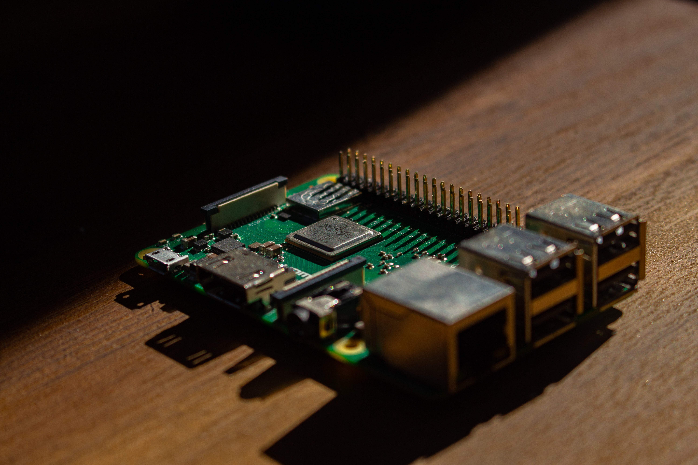

Raspberry Pi (/paɪ/) is a series of small single-board computers developed in the United Kingdom by the Raspberry Pi Foundation in association with Broadcom.
Early on, the Raspberry Pi project leaned towards the promotion of teaching basic computer science in schools and in developing countries. Later, the original model became far more popular than anticipated,[18] selling outside its target market for uses such as robotics. It is now widely used in many areas, such as for weather monitoring,[19] because of its low cost, modularity, and open design. After the release of the second board type, the Raspberry Pi Foundation set up a new entity, named Raspberry Pi Trading, and installed Eben Upton as CEO, with the responsibility of developing technology.[20] The Foundation was rededicated as an educational charity for promoting the teaching of basic computer science in schools and developing countries. Sold units of the Raspberry Pi The Raspberry Pi is one of the best-selling British computers.[21] As of December 2019, more than thirty million boards have been sold.[22] Most Pis are made in a Sony factory in Pencoed, Wales,[23] while others are made in China and Japan.